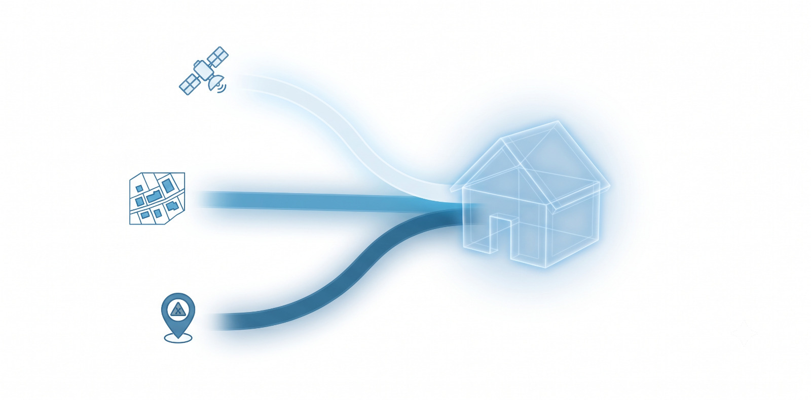

Croisement des données bâtimentaires et climatiques, jumeau numérique, score de résilience — et les métiers qui s'appuient déjà sur nos diagnostics.
Notre orchestrateur multi-agents croise l'adresse ou la zone recherchée avec les bases de risques climatiques (Géorisques, Copernicus, BDNB) pour construire le jumeau numérique et calculer le score de résilience — sans aucune saisie manuelle.

Une reconstitution 3D de votre maison qui visualise, zone par zone, son exposition aux risques climatiques actuels et futurs.
Des préconisations concrètes et chiffrées pour renforcer les zones les plus vulnérables de votre bien, classées par impact.
Engagez les travaux recommandés et obtenez la certification Climato-Résilient Typhoon, ouvrant droit à une prime sur votre cotisation.
Banques, assureurs, agents et promoteurs utilisent Typhoon au moment précis où la résilience climatique d'un bien devient un critère de décision.
Évaluez le risque climatique avant d'accorder un prêt immobilier.
Identifiez les biens à haut risque avant de les souscrire.
Faites de la résilience climatique un argument de vente.